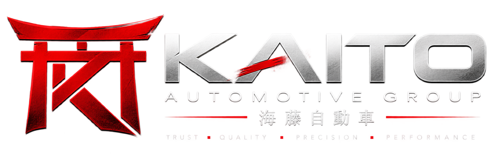
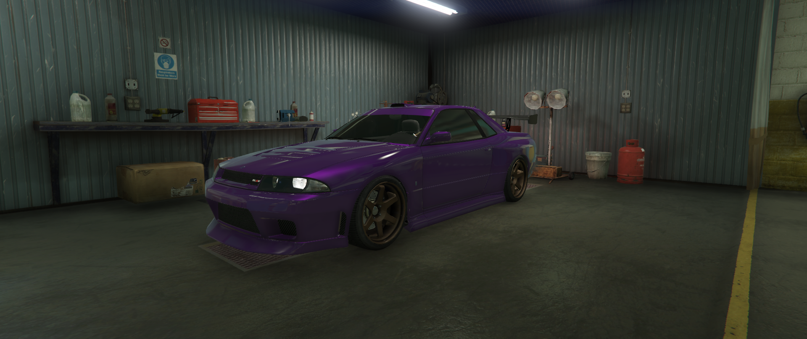
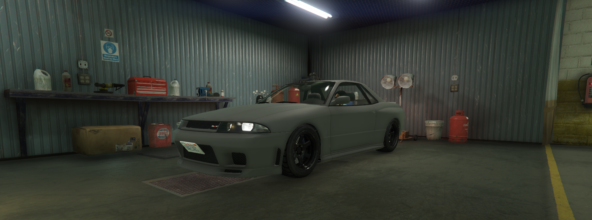

Performance tuning
Motor, ECU, turbó, hűtés és hajtáslánc összehangolása.

海斗 • JAPANESE PERFORMANCE
Prémium tuning, precíz szerelés és karakteres építések. A Kaito Automotive azoknak készít autót, akik nem akarnak beleolvadni a forgalomba.
A Kaito Automotive a japán műhelyek precizitását ötvözi a Los Santos-i utcák agresszív karakterével. Minden projekt célja ugyanaz: tiszta forma, megbízható technika, érezhető teljesítmény.
Utcai használattól a teljes performance buildig.
Motor, ECU, turbó, hűtés és hajtáslánc összehangolása.
Stabilabb úttartás, pontosabb kormányzás és nagyobb fékerő.
Karakteres hangzás és szabadabb gázáramlás az autó stílusához igazítva.
Felnik, karosszéria, stance, színek és részletek egy koncepcióban.
Átvizsgálás, javítás és megelőző szerviz a megbízhatóságért.
Komplett projekttervezés a gyári állapottól az átadásig.
03 / PARTS & SUPPLY
A Kaito Automotive Group partnerprogramja vállalkozások számára biztosít kedvezményes alkatrészellátást, cserébe a Kaito által kezelt járművekre biztosított szervizkedvezményekért.
A partner vállalja:
25% kedvezmény a Kaito Automotive Group által kezelt flotta-, Project- és ügyféljárművek szerelési munkadíjából.
A partner vállalja:
50% kedvezmény a Kaito Automotive Group által kezelt flotta-, Project- és ügyféljárművek szerelési munkadíjából.
A partner vállalja:
100% szerelési munkadíj-kedvezmény a Kaito Automotive Group által kezelt flotta-, Project- és ügyféljárművekre.
A partneri szervizkedvezmény a Kaito Automotive Group által kezelt flotta-, Project- és ügyféljárművekre érvényes.
04 / KAITO LOGISTICS
A Kaito Logistics biztosítja az alkatrészellátás és a járműprojektek logisztikai hátterét. Feladatunk az alkatrészek partnercégekhez történő kiszállítása, valamint a Kaito által kezelt Project- és ügyféljárművek mozgatása saját telephelyünk és partnercégeink között.
PARTS DELIVERY
A Kaito Parts & Supply által biztosított alkatrészek szervezett kiszállítása partnercégeink részére.
PROJECT VEHICLE TRANSFER
A Kaito által kezelt Project- és ügyféljárművek mozgatása a Kaito Automotive Group telephelye és partnercégeink között.
A Vehicle Transfer kizárólag a Kaito Automotive Group által kezelt Project- és ügyféljárművek mozgatására szolgál.
Az Elegy Retro Custom visszafogott alapjából karakteres Midnight Purple, performance fókuszú Kaito Build született. Az eredeti karakter megmaradt, miközben a megjelenés és a vezetési élmény egy magasabb szintre került.


Az alábbi árak mintaárak; később könnyen átírhatók a szerver gazdaságához.
A Kaito Automotive Group egy japán ihletésű tuning- és performance műhely. A célunk nem a túlzás, hanem az összhang: olyan autókat építünk, amelyek már álló helyzetben elmondják, kiknek készültek.
Minden projekt konzultációval kezdődik, majd egy világos build-terv alapján készül el.